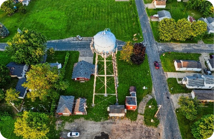
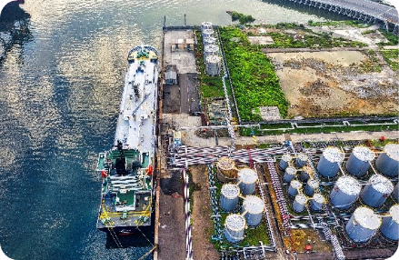
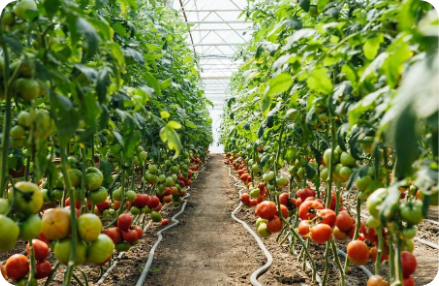

LPG is used in various farming and agriculture applications.
Typical applications of LPG in Agriculture include:
Typical applications of LPG in Agriculture include:
-
Constant temperature control for brooders
-
Hot water for sanitation and other uses
-
Space heating for poultry sheds, fish farms, greenhouses and nurseries
-
Cost effective power generators
-
Forklift fuel
-
Flame weeding and pest control without chemical
-
Handling and processing of meat and other food products
-
CO2 generation for plant growth enhancement.
-
Drying produce such as cotton, grains, milk products, nuts & tobacco
-
As a diesel fuel substitute, in machinery, to reduce costs and emissions
GALLERY


